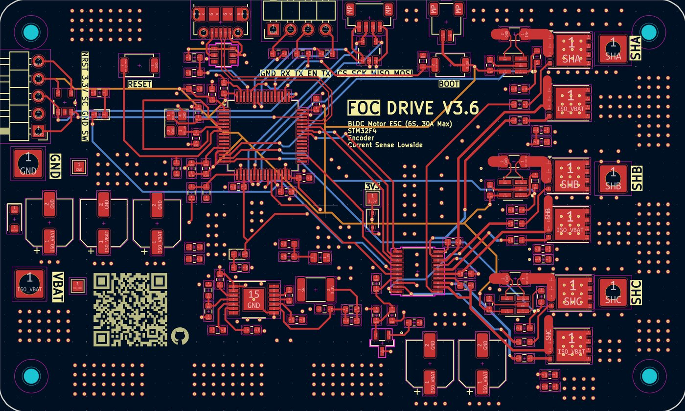
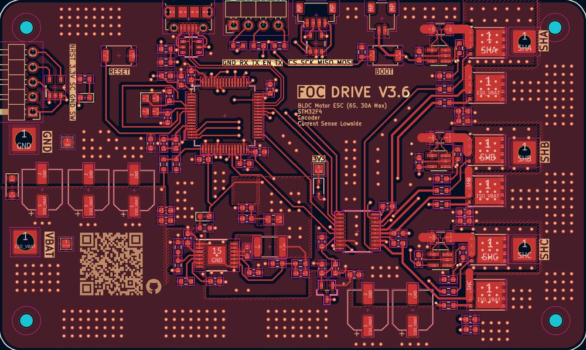
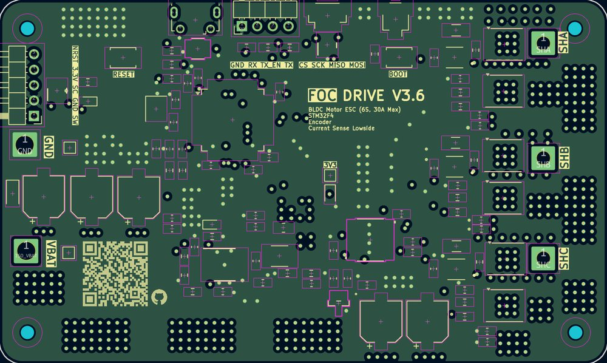
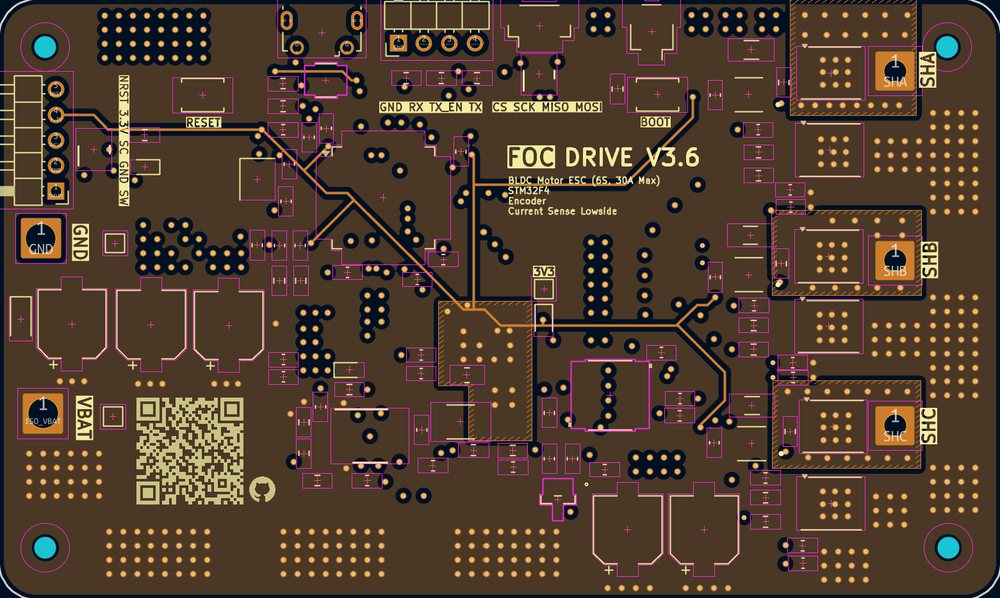
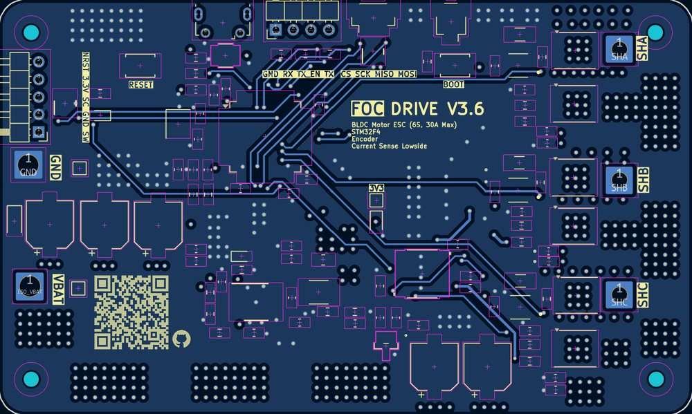

I’m a Mechanical Engineering student at the University of British Columbia (BASc, expected April 2029). I'm passionate about robotics, PCBs, and mechanical design.
I develop mechanical systems, custom PCBs, and simulations through my roles in design teams, personal projects, and in undergraduate research.
I am deeply passionate about the integration of different engineering disciplines.
My projects range from designing custom gearboxes, motor controllers, and RF communication systems.
These experiences have strengthened my problem-solving skills
and my ability to approach engineering challenges from both
mechanical and electrical perspectives.
For the UBC UAS payload team, I designed a 4L PETG water-carrying container.
I modeled the geometry in Onshape, designed a thermoforming mold, and evaluated how the body could be manufactured
and attached to the UAV payload frame.
Lid
I designed a 3D-printed quarter-turn locking mechanism for fast, secure assembly.
I iteratively refined the threads, mechanical tolerances, and sealing approach to reduce leakage during dynamic flight conditions.
A three-finger robotic gripper developed through undergraduate research at Prime Robotics, combining compliant mechanical joints with custom motion-sensing electronics.
Mechanical
I designed the three-finger mechanism in SolidWorks, using 3D-printed PLA compliant joints to accommodate variations in object shape. The project explores how compliant fingers can support grasping without rigidly matching every object geometry.
Electrical
I developed and prototyped custom PCBs for motion sensing, integrating IMUs with I2C communication. The design includes an STM32 interface, I2C multiplexing, connectors, and support circuitry. Hardware bring-up and troubleshooting are ongoing.
A mechanical design and modeling project for a 6 kg quadruped robot. I developed the leg transmission and modeled its kinematics to evaluate joint motion, workspace, and torque demands. A custom BLDC motor controller is being developed as a separate part of the system.
Mechanical
I designed a compact 45:1 planetary-cycloidal gearbox in SolidWorks and packaged the actuator assemblies into a 3-DOF leg. I compared torque requirements, reduction ratios, and available space when selecting the transmission layout.
I developed forward and inverse kinematics models in MATLAB to study joint configurations, workspace limits, and leg motion. I also used the models to assess locomotion and joint torque requirements.
Current Status
Initial testing of the 45:1 planetary-cycloidal gearbox is complete, with design revisions underway. The belt-drive mechanism has been selected and is awaiting testing.
The custom BLDC motor controller PCB has been ordered and is awaiting hardware testing.
The next steps are to refine the gearbox, test the belt drive, implement FOC, and assemble a fully functional robotic leg. The goal is to complete the quadruped and demonstrate basic locomotion by mid-December 2026.
Designed a custom 6S BLDC motor controller PCB in KiCad for a 6 kg quadruped robot, integrating motor control, current sensing, and embedded processing into a compact board. The initial prototype has been ordered for hardware testing.
Hardware Design
The controller integrates an STM32F401 microcontroller, a three-phase MOSFET bridge, a DRV8300 gate driver, and low-side current sensing circuitry. Supporting electronics include a 3.3 V buck converter, 9 V gate-driver supply, voltage monitoring, and communication interfaces.
The PCB was designed to support the electrical and control requirements of a custom robotic actuator.
Motor Control & Current Sensing
The controller is designed to implement Field-Oriented Control (FOC) for precise torque and position control of the BLDC motor.
The design incorporates three-phase low-side shunt resistors and current-sense amplifiers to measure motor phase currents. Timer-triggered ADC injected conversions are planned to synchronize current sampling with PWM switching, enabling phase-current feedback for the FOC algorithm.
Schematic
Motor controller schematic showing the STM32F401, power regulation, gate driver, three-phase MOSFET bridge, current sensing, and protection circuitry (click to enlarge)
PCB layout

PCB layout, all layers

Layer view 1

Layer view 2

Layer view 3

Layer view 4
System Integration
The controller is intended to communicate with other joint controllers and a higher-level ROS2-based robotic control system.
Current Status
The initial PCB has been ordered and is awaiting hardware testing. FOC implementation, ADC sampling synchronization, and closed-loop motor control remain to be validated.
Developing a custom 4-layer, 915 MHz telemetry ground station PCB for UBC Rocket, independently responsible for the complete hardware design, from component selection and circuit architecture to schematic capture and PCB layout.
Hardware Architecture
The design integrates an SX1262 RF transceiver and STM32G0 microcontroller, with support for antenna diversity and a target transmit power of 1 W. Supporting circuitry includes USB-C power input, USB-to-UART communication, 3.3 V regulation, and an SMA antenna interface.
The system is designed for long-range telemetry communication, targeting a 40 km line-of-sight range.
RF Design and Simulation
Researched RF impedance matching, transmission lines, and matching network design to support operation at 915 MHz.
Used LTspice to simulate impedance matching networks, evaluating frequency response and impedance transformations between the RF transceiver and 50 Ω antenna interface.
Current Status
RF component selection, impedance matching simulations, and hardware design are in progress. PCB fabrication and experimental RF validation have not yet been completed.
I am developing a compact, 5 V ExpressLRS receiver for UBC Uncrewed Aircraft Systems, with adjustable RF transmit power.
System design
I am researching RF transceivers, antenna interfaces, and power-management components to define the system architecture and select parts for a true-diversity design.
Status
Component research and architecture development are ongoing; performance results are not yet available.